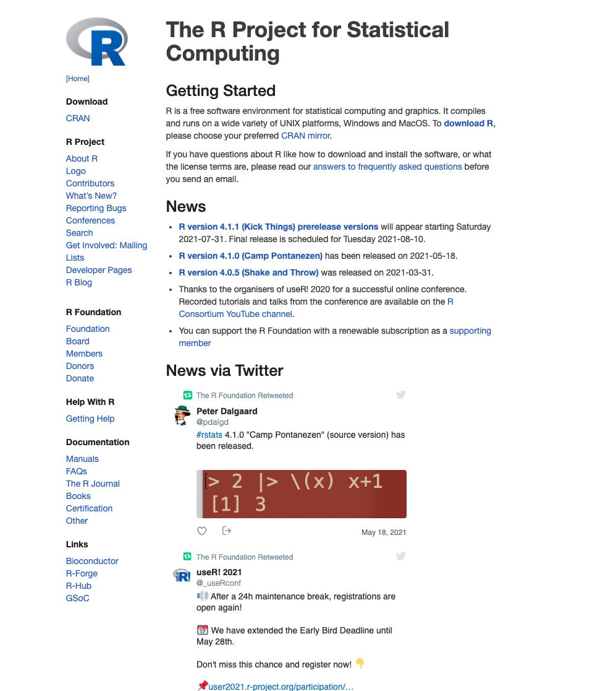
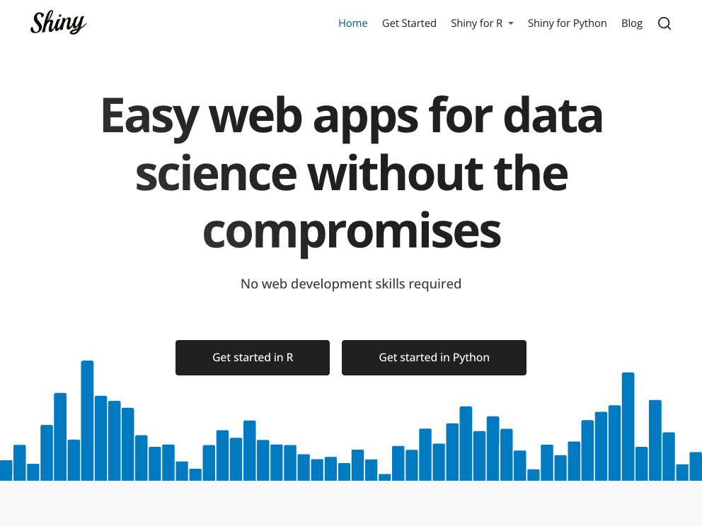
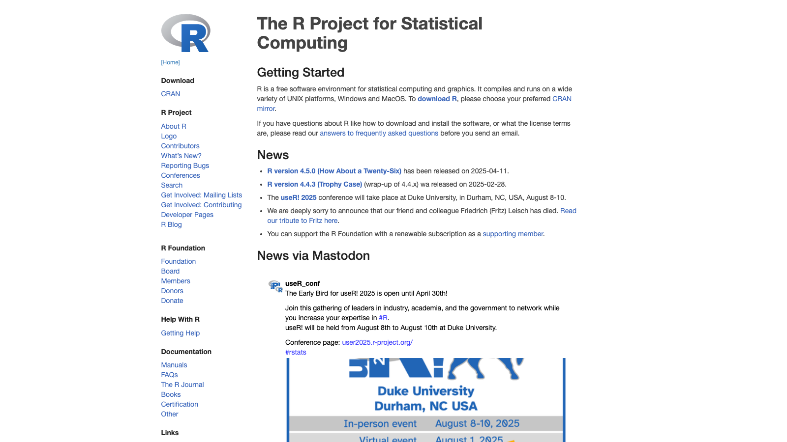

webshot2 is meant to be a replacement for webshot, except that instead of using PhantomJS, it uses headless Chrome via the Chromote package.
Installation
# CRAN
install.packages("webshot2")
# Development
remotes::install_github("rstudio/webshot2")You also need to have the Chrome browser installed on your system. You can also use other browsers based on Chromium, such as Chromium itself, Edge, Vivaldi, Brave, or Opera.
Usage


# Specific height and width
webshot("https://www.r-project.org", vwidth = 1600, vheight = 900, cliprect = "viewport")